Elapsed 00:00
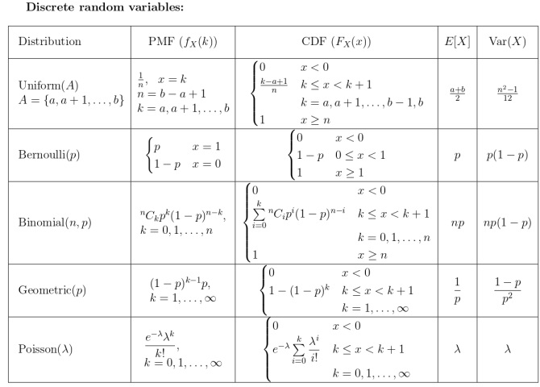
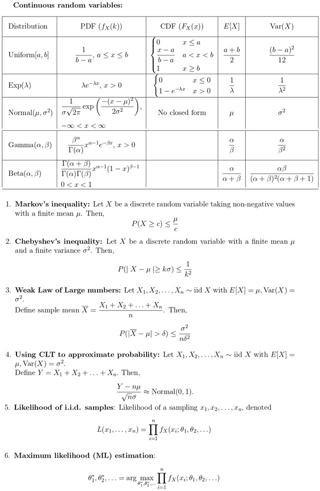
- Useful Data has been mentioned above.
- This data attachment is just for a reference & not for an evaluation.
Q7MSQ3 marksselect all that applyWhich of the following functions is/are continuous?
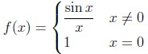
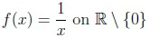
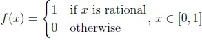
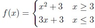
Q8MSQ3 marksselect all that applyLet A be a n × n positive definite matrix. Then, which among the following are correct?
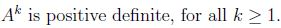
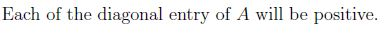
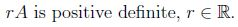
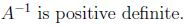
Q10MSQ3 marksselect all that apply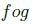
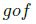
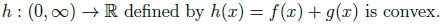
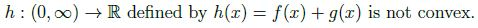
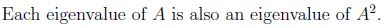
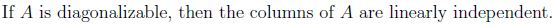
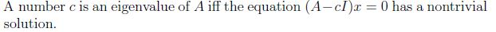
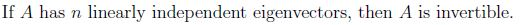
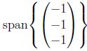
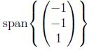
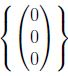
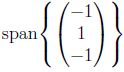
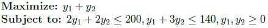
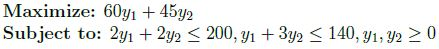
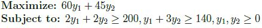
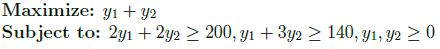
Comprehension passage - the questions below it refer to this
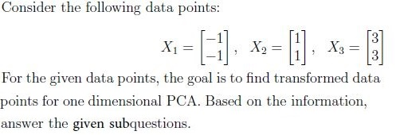
Which of the following represents the covariance matrix, C for the given data points?
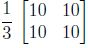
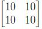
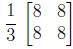
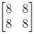
What is the value of the projected variance? Enter the answer correct to two decimal places.
Answer key
- Q1 (MCQ, 0 marks): A
- Q2 (SA, 3 marks): 9
- Q3 (SA, 3 marks): 0.089 to 0.095
- Q4 (SA, 3 marks): 0.74 to 0.79
- Q5 (SA, 3 marks): 0.24 to 0.28
- Q6 (SA, 3 marks): 0.020 to 0.030
- Q7 (MSQ, 3 marks): A, B, D
- Q8 (MSQ, 3 marks): A, B, D
- Q9 (SA, 4 marks): 0.370 to 0.380
- Q10 (MSQ, 3 marks): B, C
- Q11 (MCQ, 2 marks): C
- Q12 (MCQ, 2 marks): B
- Q13 (MCQ, 2 marks): B
- Q14 (MCQ, 2 marks): C
- Q15 (SA, 2 marks): 5.30 to 5.37
- Q16 (SA, 2 marks): 10